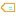

AXIS MICRO BBS INSTALLER
AXIS Micro BBS firmware and the LRA FLOWTRON DATAMASTER 3000 SERIAL MODEM - LFD3K-SM
by Rev. J. Money / jmscnc.com
YOU NEED AN SD CARD FOR FULL FUNCTIONS
Features marked SD keep their data on the card in the BBS board. A board in a cluster whose main has a card gets every function through the main, so it needs no card of its own. A board that runs alone with no card: pick the No SD card build below.
This browser cannot flash a board. Open this page in Chrome or Edge on a Windows or Linux computer. You can still pick a build here and use the command for your own PC at the bottom.

1. What are you flashing?
Radio images come with the first LFD3K-SM release.
2. Pick a build (for the AXIS Micro BBS board)
Leaving features out frees mostly flash (room for new features), not idle free memory: the board's own code holds only about 7 KB of static RAM, and most of the 47 KB that is always taken belongs to Wi-Fi and the network stack. What does go away are the busy-time memory spikes in the last column, so the board has more room while it is busy.
Every feature starts on. Untick what you want left out.
3. Install
the browser asks which USB port; Chrome or Edge on Windows or LinuxAn update writes the firmware only: users, messages and settings stay. A board that does not run AXIS yet gets a first install, after a warning.
FIRST INSTALL
Or build it on your own PC
One command downloads every tool it is missing, builds what you picked above and flashes it. It shows the same warning before a first install.
Windows (PowerShell)
Linux (sh)